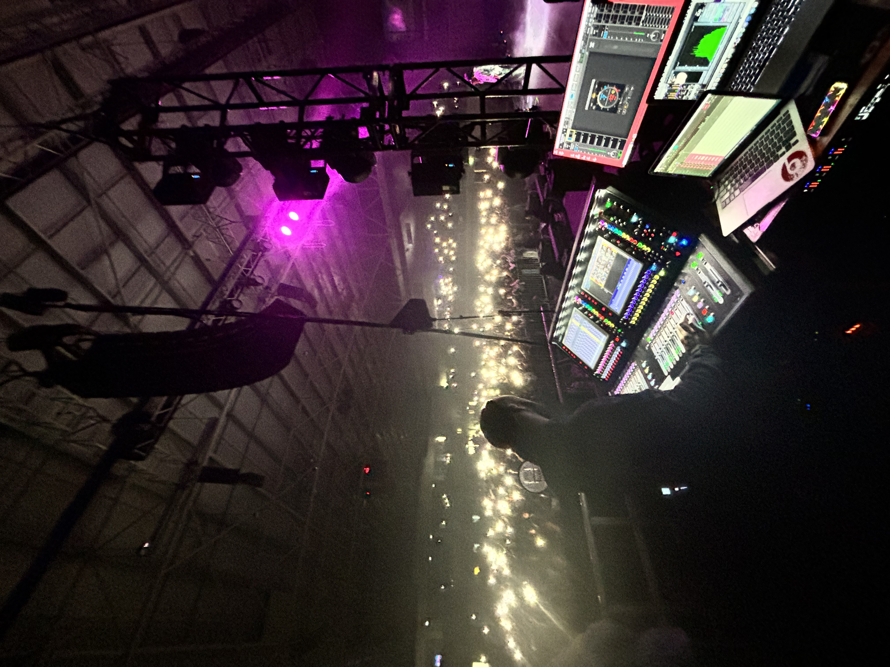

Live Concert Venue
Toronto, Canada • Live Audio
AKHEAM
JACKSON
Front of House • Monitor Engineer
Radio Recording Engineer
Creating exceptional live sound for touring artists, festivals, concert venues and broadcast productions. Combining over 12 years of professional experience with a musician's ear to deliver mixes artists trust and audiences remember.
The engineer behind the mix
Meet Akheam

12+ years
Live audio experience
ROOTS
Music has always been at the heart of my journey. Growing up in Jamaica and performing as a musician gave me a deep appreciation for the connection between artists and audiences. That passion eventually led me behind the mixing console, where I discovered the craft of live sound engineering.
THE JOURNEY
After moving to Canada, I studied Audio Production & Engineering at Metalworks Institute before building my career across REBEL Entertainment Complex, Danforth Music Hall and CBC. Every venue, artist and production strengthened both my technical ability and my approach to live sound.
TODAY
Today I specialize in Front of House, Monitor and Broadcast Audio, working across concerts, festivals and live productions. My focus is simple: deliver reliable, musical sound so artists can perform with confidence and audiences can experience every moment exactly as intended.
SPECIALTIES
FOH
Musical, impactful audience mixes
MON
Clear, reliable artist monitoring
RADIO
Radio Recording Engineer • CBC
CAREER SNAPSHOT
12+
Years
2000+
Productions
3
Venue Residencies
Audio Portfolio
Hear the Work.
A curated collection of front-of-house two-track stereo mixes and in-ear monitor stereo mixes. Artist names, venues and production details have been intentionally omitted.
Front of House Stereo Mixes
Professional two-track stereo mixes demonstrating balance,
clarity, impact and musicality for live audiences.
Mixes
Front of House Stereo Mixes
Professional two-track stereo mixes demonstrating balance, clarity, impact and musicality for live audiences.
Reference Playback
Front of House Stereo Master
FOH Reference Mix 001
1 of 8
L
-∞
R
-∞
-60
-48
-36
-24
-18
-12
-6
-3
0
0:00
0:00
In-Ear Monitor Stereo Mixes
Stereo monitor reference mixes focused on performer comfort,
vocal clarity and instrument separation.
Mixes
In-Ear Monitor Stereo Mixes
Stereo monitor reference mixes focused on performer comfort, vocal clarity and instrument separation.
Reference Playback
In-Ear Monitor Stereo Master
IEM Reference Mix 001
1 of 8
L
-∞
R
-∞
0:00
0:00
All audio samples are presented solely to demonstrate mixing and engineering quality. Artist identities, venues and production details have been intentionally omitted to respect client confidentiality.
Selected experience
Trusted in demanding live environments.
01
02
03
Live Concert Venue
REBEL
Senior FOH & Monitor Engineer 2016 – PresentBroadcast
CBC
Radio Broadcast Engineer Part-TimeFeatured portfolio
Browse the work like a series.
Featured Artists
Artists and productions I’ve supported.
Sean Paul
Monitor EngineeringChronixx
Monitor EngineeringA$AP Ferg
Monitor EngineeringTechnical expertise
Consoles. Workflows. Precision.
From live concerts to festival stages and broadcast, I work across industry-leading consoles and systems to deliver clean, powerful and reliable audio.
Avid S6L
Broadcast • Festival • Live Recording • Virtual Soundcheck • Pro Tools IntegrationDiGiCo Quantum
FOH • Monitor Mixing • Festival Routing • Waves Integration • Macro WorkflowsYamaha CL Series
Live Sound • Corporate Events • Broadcast • Dante Networking • Installed SystemsMidas Heritage HD96
Festival Mixing • High Channel Counts • Analog Workflow • Touring ProductionsSystems Integration
Dante • Analog Splits • Stage Racks • RF Coordination • Signal FlowProfessional Audio Ecosystem
The technology behind every performance.
Professional live productions depend on reliable wireless systems, networking, measurement tools and real-time processing. These are the technologies I trust on broadcast, touring and festival productions.
Shure Axient Digital
Wireless microphones • RF coordination • Festival and broadcast systems
Shure PSM1000
Professional in-ear monitoring • Artist monitor mixes • RF deployment • Touring productions
Sennheiser Digital 6000
Digital wireless systems • Broadcast audio • High-density RF environments • Live productions
Dante Networking
Audio networking • Device routing • Redundant systems • Festival and broadcast infrastructure
Waves SoundGrid
Live plugin processing • MultiRack • Real-time mixing • Low-latency workflows
Rational Acoustics SMAART
System optimization • PA alignment • Frequency analysis • Audio measurement
Bookings & collaborations
Let’s make the show sound exceptional.
Available for FOH, monitor engineering, live production and broadcast audio opportunities.
kheamaudio@gmail.com Instagram @kh3am